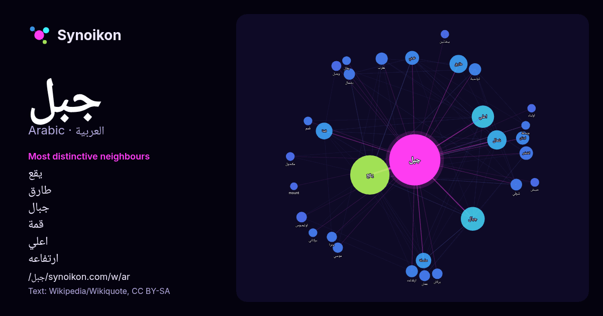

العربية · قائمة كلمات اليوم
جبل
“mountain” · الكلمات الموجودة حولها في 1465 ورودًا من ويكيبيديا, Wikiquote.

الجيران الأكثر تميّزًا
- يقع 69×
- طارق 47×
- جبال 45×
- قمة 31×
- اعلي 25×
- ارتفاعه 23×
- بشمال 22×
- اخضر 21×
- اوليمبوس 20×
- تونسية 19×
- بركان 18×
- وجبل 17×
- لبنان 16×
- مترا 15×
- غربي 15×
- شمال 14×
- مكحول 14×
- بوسط 14×
- عمان 13×
- يطل 13×
× = كم مرة أكثر مما في نصوص ويكيبيديا العامة.
الجيران الأكثر تكرارًا
- يقع 265
- جبال 98
- اعلي 86
- شمال 64
- طارق 56
- مدينة 54
- قمة 48
- جنوب 43
- سلسلة 41
- مرة 41
- جمهورية 35
- محافظة 35
- غربي 33
- قرية 33
- منطقة 32
- يبلغ 32
- اخضر 31
- شرق 31
- قري 31
- لبنان 30
في السياق
- الجبل هو جزء مرتفع من القشرة الأرضية، يتميز عمومًا بجوانب شديدة الانحدار تظهر فيها الصخور المكشوفة بشكل واضح. على الرغم من اختلاف التعريفات، فإن الجبل Wikipedia snippets · جبل
- جبل طارق (الإنجليزية: Gibraltar، جبرلتار) هي منطقة حكم ذاتي تابعة للتاج البريطاني، تقع في أقصى جنوب شبه جزيرة إيبيريا على منطقة صخرية متوغلة في مياه البحر Wikipedia snippets · جبل طارق
- جبل عامل أو جبل الجليل أو جبل الخيل أو بلاد بشارة أو بلاد المتاولة أو البشارتين هي المنطقة التي يطلق عليها اليوم اسم لبنان الجنوبي أو جنوب لبنان وقد ضمّت Wikipedia snippets · جبل عامل
- جبل أُحُد «بضمّ الألف والحاء» هو جبل يطل على المدينة المنوّرة من الجهة الشمالية، كان يبعد عنها ثلاثة أميال ونصف قبل أن يصله العمران. وعلى بعد 4 كم من المسجد Wikipedia snippets · جبل أحد
- القمم أهمها جبل المنار وجبل بني خضير وجبل المصنعة وجبل النوبة، ومن ناحية الشرق يوجد نتوء مسنن أعلى قمتين فيه هما جبل رَبَك وجبل شجان، ومن قمة جبل جحاف يمكن Wikipedia snippets · محافظة الضالع
- جبل تفتان هو جبل بركاني نشط يقع في جنوب شرق إيران بمحافظة سيستان وبلوتشستان وهي محافظة معروفة ببواديها المترامية الأطراف، لكن المناظر الطبيعية الفذة تتناثر Wikipedia snippets · جبل تفتان
- جبل الرماة، أو جبل عينين، هو عبارة عن جبل صغير يقع بجانب جبل أحد، شمال المسجد النبوي على بعد نحو ثلاثة كيلو مترات منه، قرب المدينة المنورة. وهو الجبل Wikipedia snippets · جبل الرماة
- دائرة جبل امساعد هي إحدى دوائر ولاية بوسعادة الجزائرية. بوابة الجزائر Wikipedia snippets · دائرة جبل امساعد
كلمات أخرى
- أغنية
- إله
- تاريخ
- جرس
- جزيرة
- جسر
- حديقة
- حصان
- حقيقة
- حياة
- خبز
- خريطة
- خريف
- ذهب
- زمن
- ساعة
- شاي
- شتاء
- صحة
- صحراء
- صمت
- صيف
- طبيعة
- طريق
- طعام
- ظل
- عائلة
- عاصفة
- عسل
- علم
- عمل
- غابة
- فن
- قطار
- قطة
- قلب
- قوة
- كلب
- لغة
- ماء
- مال
- مدينة
- مرآة
- مطر
- ملح
- مناخ
- موت
- نجم
- والدة
حُسبت مسبقًا في 2026-10-09 بالإعدادات الافتراضية (±5 كلمات، مدوّنة متوسطة). يمكن للخريطة التفاعلية تحديثها ببيانات حية.
واجهة مترجمة آليًا؛ نرحب بالتصحيحات.